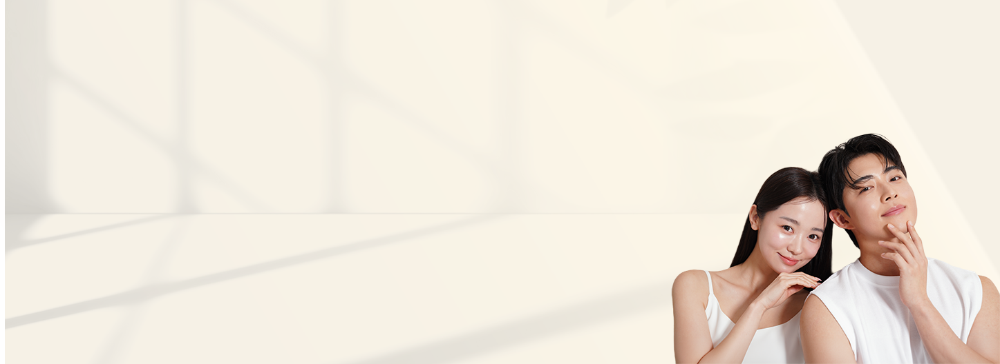

施術を受けられたお客様からいただいた、うれしいお声をご紹介します。
私の場合、2回目位で肌のトーンが上がり、肝斑が劇的に薄くなるのを実感しました。会う人色々な人に、大きなシミがなくなってる！！とか肌がすごい綺麗になったと言われて、嬉しくて自分でも気をつけてケアするようになりました。肌のことに無頓着だった自分が、大きな肝斑ができたことをきっかけにこちらに通うようになってから、こんなに意識が変わっていくとは思いませんでした。それ程、効果を実感しています！！
数年前に参加した同窓会。数十年ぶりに合った正直者男性に『お前が1番老けた！』と言われ、笑って何か言い返したけど心の中はズタボロ。これはマズイ！と…職場でお肌がとても綺麗な人に声をかけ…メディカルエステうるおいさんを紹介して頂きました。メソアクティスは施術後から顔色が明るくなったのを実感できるし、翌日も友人から肌を褒めてもらえるしと良いことだらけです。スタッフの方々もいつも優しくて、うるおいさんに来るのが楽しみです。今では、「お肌のために何かしているの？」と聞かれることも多くて、お肌が改善されてきたんだなぁと思います。今では、正直同級生に心から感謝しています。
16年通っています。16年続くのは肌に結果がはっきりと出るからです。通ったきっかけが、肝斑とシミと乾燥がひどく、化粧のりもわるく、シミと肝斑を消すのにコンシーラを厚く塗り隠している状態でした。今ではシミも肝斑も薄くなり肌のトーンも明るくなりました。冬場でも乾燥が気にならなくなり、ファンデーションののりも良く効果を実感しています。これからもぜひ続けていこうと思います。
施術を受け始めてから肌荒れがおさまり、シミもうすくなりました。肌がつるつるになり、ブツブツも出きなくなりました。人にすすめたくなる。
こちらの施術を受け始めてから肌の質が変わりました！元々ニキビ（生理前など）ができやすかったのですが、できにくくなり肌のザラザラした感じがなくなりました。施術自体に痛みはなく、終わった後のツヤ感がとても良いです！スタッフの方も親しみやすく今後も自分の肌の状態をみながら継続していきたいなと思います！
月一回のペースで通っています。スタッフの方が、肌の調子をチェックして下さるので心強いです。メソアクティスは、びっくりするほど肌がもちもちになります。
ニキビがなおらず困っていたときに、うるおい皮ふ科で先生に診てもらったときに、こちらをおすすめされてとりあえず試してみようと、この水素水ピーリングに通い始めました。通い始めて少し経つうちに、いつもニキビができていた場所に、新しいニキビができにくくなったことを実感しました。エステの方も栄養や肌にいい習慣などを教えてくださって楽しく通うことができました。
角栓の詰まりとニキビが気になっており施術を受けました。自宅でのケアではなかなか効果を実感できなかった頑固な毛穴でしたが、施術後のスッキリ感が嬉しかったです。繰り返し受けることで、ニキビもできにくくなり満足です。肌が強くはありませんが、安心して受けられるので、今後も継続したいと思います。
20代後半になり、アゴに吹き出物が出てくるようになりました。同じタイミングでコロナ禍によるマスク生活が始まり、悪化の一途をたどっていました。水素水ピーリングを始めてから、炎症のあった箇所が少しずつ良くなっていくとともに吹き出物が出る頻度がかなり減りました。吹き出物がない部分はツルツルになり、吹き出物が出やすい箇所は状態が改善していくので、これからも続けていきたいと思います。
最初はニキビをゴリゴリする感覚があるので痛みはありますが、回を追うごとにニキビが減っていくので痛みも少なくなります。施術を受ける前はメイクをするのが嫌でしたが、今では肌に凹凸が減ったのでメイクが楽しいです。
顔全体に黄ニキビができてしまい、今まで色々な種類の薬をぬってもなおるきざしもなかったですが、水素水ピーリングを施術してもらい毛穴の奥までスッキリ洗い流してもらったことで、顔全体にできてしまった黄ニキビが治り、本当に嬉しかったです！
以前はニキビのせいで肌がでこぼこしていましたが、何回か施術を重ねていくうちに新しいニキビが出きにくくなりました。日によって多少の差はあれど、以前よりかなり肌ざわりが良くなりました。
スマスアップネオを初めて施術して感動です！！たるみがなくなり顔がシャープになりました。いつもこんなに顔がたるんでいることを知り、これからもスマスアップネオを続けて、たるみをなくしていきたいです。
施術終わってびっくり！！リフトアップ効果すごいです。顔全体がシャープになり目が大きくなりました！もたついてた、あご、頬のお肉が全体にひきしまり、平らになった気がします。中からリフトアップ感実感できます。施術もあったか＋グルグルマッサージ？ですごく良かったです。
スマスアップネオを受けて…。前から受けてみたかったスマスアップネオ、ほど良い痛みと刺激感、以前のスマスアップより苦痛感もなくお勧めです。施術後、顔（頬）の重さが無くなりスッキリし、目がパッチり。ドヨ～ンとしていた顔がシャキーン！！とシャープになりました。顔のクスミも取れピカピカ。2週に1回、施術を受けてみたくなりました。
年齢的にほうれい線や、瞼のたるみが気になっています。スマスアップネオの施術後、表情が明るくなり、特に目の周り、瞼が持ち上がり、目がぱっちり！！若返りました。施術は、出力MAXでやってもらいましたが、痛気持ちいい感じで、心地よかったです。頬がやわらかく、モチモチになりました。シワは取れないとの事なので、深いシワが出来る前に定期的にたるみケアをするとよいかと思います。自分へのご褒美におすすめです。
顔、首のたるみが気になって施術をして頂きました。顔の左右差も気になっていました。施術は最初に肌をあたためて頂き、とても気持ちよく、じんわり肌があたたまりました。その後の少し刺激が加わる施術では、肌が広範囲に動く感じがして、たるみに作用している様に感じました。施術後、鏡を見せて頂き、最初に感じたのは、ほうれい線が目立たなくなっていて、ほほのたるみがあがることによってほうれい線が目立たなくなったのではないかと思いました。目の下のたるみも少し改善されていて、全体的にすっきりした感じがしました。
最近口角の下がりが気になりはじめたので、今日スマスアップNEOを体験しました。施術は肌に刺激をあたえてくれて何か効いてるぞ！！と思いながらやって頂きました。施術後、自分の顔みてびっくり、肌のつやもあり、なんと口角が上がってたんです。又、是非次回もやってみます。
マスク生活が続いたせいか、表情筋は固くマスクほうれい線も気になっていました。スマスアップNEOを体験してみて施術中から表情筋が柔らいでくるのがわかって、終わってみれば目元スッキリ、フェイスラインスッキリお肌プルプル軽やかに。鏡をみなくても実感できるほどです。皆におすすめしたいです。
顔のたるみが気になっていて、スマスアップに興味がありました。最初は痛みに耐えられるかなと心配でしたが、無理のない出力で施術していただき、今ではずい分慣れました。毎回終わるたびに肌全体にハリが戻った実感があり、回数を重ねるごとにそのハリが継続していくので、今後も続けていきたいと思います。いつもありがとうございます！
顔全体のたるみとくすみが気になり、こちらのスマスアップを知り、カウンセリングを受けました。とても丁寧に説明してくださり、無理のない範囲で通える事で、コースを受ける決断をしました。スマスアップを受けてから、肌が活性化されているのか、化粧ノリがすごく良くて、調子が良いです！これからの効果がとても楽しみです。
年齢を重ね、額や目尻の小じわ、ほうれい線、顔全体のたるみが気になり、悩んでおりました。他のフェイシャルエステなども試してみましたが、改善には至らず。こちらのスマスアップコースをホームページで知り、現在、月1回のペースで通い2年半近くになります。肌の老化の進行を防ぎ、はりを保ち、状態を維持できているように実感しております。これからも継続できればと思っております。
顔全体のたるみがとても気になりこちらで施術を受けさせて頂きました。普段使っていない顔の筋肉に刺激を受け肌にハリが戻ったようです。月に1度は必ずお願いしてます。スタッフの方はとても感じが良く毎回毎回癒されてます。ありがとうございます。
目の下のたるみが気になり人生初のエステを受ける事にしたのですが、スタッフの方々がとても親切でとてもリラックスして受ける事ができました。スマスアップを初めてから周りの人から顔がスッキリしたね！！肌のつやが良くなったね！！などのうれしいコメントをもらえるようになり、とても満足しています。
私は毎月一回スマスアップでお世話になっています。年を重ねて目元のたるみとほうれい線が気になりこちらでスマスアップを受けさせて頂いています。目元がはっきりし、ほほのまわりもスッキリし、若くなったような気がして嬉しいです。エステシャンの方もとても親切でいやされています。いつもありがとうございます。
最初はニキビをなくしたくて通い始めました。続けていく内に頬や顎、フェイスラインにできる大きいニキビが消えていって「最近ニキビできてないな～」と思うようになっていました。1度施術してもらうだけでもツヤツヤになりますが、続けるとニキビができにくくなったり、お肌もつるっつるになったりと嬉しいことばっかりです。メイクもとても楽しくなりました。
肝斑がきっかけで通い出しました。続けてるうちにシミが目立たなくなってきたのと同時に肌のトーンアップも実感しています。お化粧するのが楽しいです。施術で特に痛みもありません。スタッフさんも親切で毎月通うのが楽しみです。肌の調子を維持する為にこれからも続けたいと思っています。
こちらのクリニックに通い始めて10年以上になりますが、おかげさまでトラブルができにくく、肌の調子が1年中安定しています。エンビロンのトリートメント後は、肌がツヤツヤで肌の透明感が増します。お気に入りの施術です。
エンビロンを使用してお肌がとてもきれいになりました。娘にも紹介して二人で使用しています。今では主人と息子も洗顔のみ使用しています。家族でお肌だけは年より若く見えてるのかもしれませんが、それだけ満足しております。これからもエンビロンを使い続けて、いつまでもお肌ピカピカでいたいです。エンビロンを愛してますと共に、スタッフの方にはいつも家族のように接してくださって感謝しております。
毎月1度通っていますが、肌がトーンアップしました。化粧品売り場の店員さんにも「白くて羨ましい！」と言われることも増え、とてもうれしいです。エンビロンをやった後は化粧ノリも良くなります。これからも通い続けたいです！！
肌もきれいになり、スタッフの方々も接しやすくて通いやすいです。平日が仕事の為土曜日しか通うことができませんが、間があいてしまっても適切に対応してくださり、肌トラブル等のアドバイスもくださるので感謝しかありません。これからもずっと通わせていただきたいです！
カウンセリングは無料です。
気になることはお気軽にご相談ください。